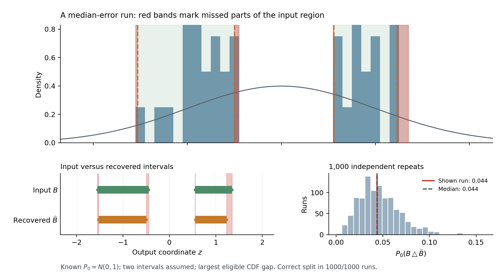

1. Question and model
At fixed input \(x\), let \(P_{0,x}\) be the original distribution of output vectors in \(\mathbb{R}^d\), where \(d\) is a positive integer. Let \(B_x\subseteq\mathbb{R}^d\) be an unknown measurable region with original probability mass \[\beta_x=P_{0,x}(B_x)>0.\] Suppose the constraint keeps only outputs in \(B_x\). The resulting distribution is \[Q_x(A)=P_{0,x}(A\mid B_x) =\frac{P_{0,x}(A\cap B_x)}{\beta_x},\](1) for any measurable set \(A\). This model preserves the original relative probabilities within \(B_x\). The subscript \(x\) allows the original distribution to change with the input.
We observe \(n\geq1\) independent outputs \(Y_1,\ldots,Y_n\sim Q_x\). Choose a measurable distance \(\rho\) on the output vectors. We may have the vectors themselves or only the pairwise distances \[\Delta_{ij}=\rho(Y_i,Y_j),\qquad 1\leq i,j\leq n.\] Can these observations recover the hidden region \(B_x\) or its original mass \(\beta_x\)?
The distinction between these data types matters. A distance matrix records the shape of a sample but can discard its position. Full output coordinates retain position, while knowledge of \(P_{0,x}\) says how much original probability lies in an unsampled part of the space. Recovery also depends on a structural assumption about \(B_x\): arbitrary measurable sets cannot be inferred exactly from finitely many observations. This is a support-estimation problem in the sense of [3].
2. What distances cannot identify
Pairwise distances describe the sampled vectors relative to one another. They do not always place that configuration in the original space.
Lemma 1 (Isometry invariance). Let \(g:\mathbb{R}^d\to\mathbb{R}^d\) preserve distance: \(\rho(g(u),g(v))=\rho(u,v)\) for all vectors \(u,v\). Applying \(g\) to every output leaves every entry of the distance matrix \((\Delta_{ij})\) unchanged.
Proof. For every pair \(i,j\), \[\rho(g(Y_i),g(Y_j))=\rho(Y_i,Y_j)=\Delta_{ij}.\] Thus the entire distance matrix is unchanged. ◻
Proposition 2 (Pairwise distances do not identify the region). Even with a known \(P_{0,x}\), different constraint regions can produce the same distribution of pairwise distances and have different original masses.
Proof. Write \(\operatorname{Unif}[a,b]\) for the uniform law on \([a,b]\). On the real line, with \(\rho(u,v)=|u-v|\), take \[P_{0,x}=\tfrac13\operatorname{Unif}[0,1] +\tfrac23\operatorname{Unif}[2,3], \quad B_1=[0,1],\quad B_2=[2,3].\](2) The two conditional laws and original masses are \[Q_{B_1}=\operatorname{Unif}[0,1],\quad Q_{B_2}=\operatorname{Unif}[2,3],\qquad P_{0,x}(B_1)=\tfrac13,\quad P_{0,x}(B_2)=\tfrac23,\] where \(Q_{B_k}=P_{0,x}(\cdot\mid B_k)\) for \(k=1,2\). If the first case produces outputs \(Y_i\), the second can produce \(Y_i+2\). Translation leaves all pairwise distances unchanged by the lemma, although the regions and their original masses differ. ◻
Remark 3. The full output vectors distinguish these cases by location. Distances to fixed reference vectors may do the same. Neither reveals parts of a region absent from the sample.
The counterexample concerns the law of the observed distance matrix, so collecting more pairwise distances from the same kind of samples does not remove this ambiguity. It does not claim that every original law or every restricted family of regions is ambiguous.
3. What makes reversal possible
The distance ambiguity disappears in an idealized setting with more information: the original distribution and the complete constrained distribution are both known in the same coordinates, and (1) describes the sampler exactly.
Proposition 4 (Identification from complete laws). Suppose \(P_{0,x}\) and \(Q_x\) are known and (1) holds. Let \(f_x\) be the density ratio of \(Q_x\) to \(P_{0,x}\), defined by \[Q_x(A)=\int_A f_x(z)\,dP_{0,x}(z)\] for every measurable set \(A\). Write \(\mathbf{1}\{E\}\) for one when condition \(E\) holds and zero otherwise. Then \[f_x(z)=\frac{\mathbf{1}\{z\in B_x\}}{\beta_x},\qquad B_x=\{z:f_x(z)>0\}.\](3) The equalities hold up to \(P_{0,x}\)-null sets, which have original probability zero. In particular, \(\beta_x=P_{0,x}(\{z:f_x(z)>0\})\).
Proof. For every measurable set \(A\), the restriction rule gives \[Q_x(A) =\frac{1}{\beta_x}\int_A \mathbf{1}\{z\in B_x\}\,dP_{0,x}(z).\] Comparing this with the defining integral for \(f_x\) yields \[f_x(z)= \begin{cases} 1/\beta_x,&z\in B_x,\\ 0,&z\notin B_x, \end{cases} \qquad P_{0,x}\text{-almost everywhere}.\] The positive set is therefore \(B_x\) up to a null set, and its original mass is \(\beta_x\). ◻
Remark 5. Equation (1) assumes hard conditioning. Reweighting outputs inside \(B_x\) can make the ratio vary there. If the original law is unknown, \(Q_x\) alone may fit several regions.
Thus the ideal reversal is simple: the positive part of the likelihood ratio locates the region, and its height gives \(1/\beta_x\). The difficulty in practice is that a finite sample does not reveal that ratio exactly, particularly at the boundary or in low-probability components.
4. What finite samples leave open
Complete knowledge of \(Q_x\) is stronger than observing many outputs. A region with small original mass can be part of the constraint and still receive no sampled points.
Proposition 6 (An unseen part can remain hidden). Take disjoint measurable regions \(B,U\) with masses \(b=P_{0,x}(B)>0\) and \(u=P_{0,x}(U)>0\). Compare \(B\) with the larger candidate \(B'=B\cup U\). Write \(Q_C=P_{0,x}(\cdot\mid C)\) for conditioning on any region \(C\) of positive original mass. If \(Y_1,\ldots,Y_n\) are independent draws from \(Q_{B'}\), then \[\Pr\{Y_1,\ldots,Y_n\in B\} =\left(\frac{b}{b+u}\right)^n>0.\](4) Given this event, the observed outputs have the same joint distribution as draws constrained to \(B\). Consequently, no rule can recover every possible region exactly from a finite sample with probability one.
Proof. Under \(B'\), each output lands in \(B\) with probability \[Q_{B'}(B)=\frac{P_{0,x}(B)}{P_{0,x}(B')}=\frac{b}{b+u}.\] Independence gives (4). Moreover, for any measurable set \(A\), \[Q_{B'}(A\mid B) =\frac{P_{0,x}(A\cap B)}{b} =Q_B(A).\] Thus, given the event in (4), the full sample has the same joint law as a sample constrained to \(B\). A rule that always returns \(B\) for that law also returns \(B\) on this positive-probability event under \(B'\), where it is wrong because \(u>0\). ◻
5. A concrete recovery rule
For a computable example, now take scalar outputs and suppress the fixed input subscript \(x\). Assume the original law \(P_0\) has a known, continuous, positive density \(p_0\) and cumulative distribution function \(F_0(t)=P_0((-\infty,t])\). Assume the hidden region \(B\) is the union of two disjoint closed intervals. We observe their full coordinates, not just their distances. The restriction rule (1) then defines the constrained law \(Q\).
Sort \(n\geq4\) distinct outputs as \(Y_{(1)}<\cdots<Y_{(n)}\). Require each recovered interval to contain at least two outputs. For a candidate split after output \(j\), retain the two observed ranges and omit the gap between them. Choose the eligible gap with largest original mass: \[\begin{gathered} j^*=\operatorname*{arg\,max}_{2\leq j\leq n-2} \left[F_0(Y_{(j+1)})-F_0(Y_{(j)})\right],\\ \widehat B=[Y_{(1)},Y_{(j^*)}]\cup[Y_{(j^*+1)},Y_{(n)}]. \end{gathered}\](5) The bracketed difference is \(P_0((Y_{(j)},Y_{(j+1)}))\), since a continuous law gives individual points zero mass. Equivalently, this rule uses the distance \(\rho_F(u,v)=|F_0(u)-F_0(v)|\) between adjacent scalar outputs. A fixed convention, such as the smallest \(j\), resolves any tie.
Proposition 7 (Maximum likelihood within the two-interval class). Suppose each component contains at least two observed outputs and \(p_0\) is positive at them. Among two-interval regions containing all outputs, (5) maximizes the conditional likelihood.
Proof. For a candidate region \(C\) containing every output, its likelihood under hard conditioning is \[L(C)=\frac{\prod_{i=1}^{n}p_0(Y_i)}{P_0(C)^n}.\] The numerator is fixed. For a fixed split \(j\), the smallest possible original mass is attained by tightening the outer endpoints to \(Y_{(1)}\) and \(Y_{(n)}\) and the inner endpoints to \(Y_{(j)}\) and \(Y_{(j+1)}\). The resulting mass is \[F_0(Y_{(n)})-F_0(Y_{(1)}) -\left[F_0(Y_{(j+1)})-F_0(Y_{(j)})\right].\] The first two terms do not depend on \(j\). Maximizing the omitted gap therefore minimizes the denominator and maximizes \(L(C)\). ◻
Remark 8. The family assumption does real work, as in related support-estimation and geometric reconstruction methods [2, 1]. With arbitrary measurable regions, one can surround the observations with sets of arbitrarily small original mass and make this likelihood unbounded. The rule also needs the original cumulative distribution in the same coordinates as the outputs. Raw Euclidean pairwise distances alone do not provide it.
Lemma 9 (Boundary mass missed by a finite sample). Write the true components as \(I_1,I_2\) with original masses \(m_k=P_0(I_k)>0\) for \(k=1,2\). Suppose component \(k\) yields \(n_k\geq1\) samples. Let \(\widehat I_k\) run from its smallest to its largest sampled value, taking a singleton when \(n_k=1\). Then \[\mathbb E\!\left[P_0(I_k\setminus\widehat I_k)\mid n_k\right] =\frac{2m_k}{n_k+1}.\](6) If (5) picks the true between-component gap, its recovered region is \(\widehat I_1\cup\widehat I_2\).
Proof. Conditional on falling in \(I_k\), the transformed value \(F_0(Y)\) is uniform over \([a_k,b_k]\), where \(a_k\) and \(b_k\) are the CDF values at the left and right endpoints of \(I_k\), and \(b_k-a_k=m_k\). Let \(U_{(1)}\) and \(U_{(n_k)}\) be the smallest and largest transformed values among the \(n_k\) outputs in this component. Uniform order statistics give \[\mathbb E[U_{(1)}-a_k\mid n_k] =\mathbb E[b_k-U_{(n_k)}\mid n_k] =\frac{m_k}{n_k+1}.\] These are exactly the original masses of the two missed boundary strips. Adding them proves (6). A correct split joins precisely the sample extrema within each true component. ◻
This expectation refers to the interval ranges formed with the true component labels. It does not condition on the data-dependent event that the largest-gap rule chooses the correct split. That distinction matters when a narrow component is poorly sampled. Indeed, with \(\beta=m_1+m_2\), the chance that component \(k\) is never sampled is \[\Pr\{\text{no output in }I_k\} =\left(1-\frac{m_k}{\beta}\right)^n.\]
6. Experiment and interpretation
Let \(P_0\) be the standard normal law and set \[B=[-1.55,-0.45]\cup[0.55,1.35], \qquad P_0(B)=0.468436.\] We drew \(n=40\) independent outputs from \(Q=P_0(\cdot\mid B)\) and applied (5). We repeated the entire draw-and-recover procedure \(1{,}000\) times with pseudorandom seed \(20261012\). To display a typical result without selecting one by eye, the figure uses the run whose error is closest to the median error across those repeats. Here error means the original probability mass of the symmetric difference, \[e(\widehat B)=P_0(B\triangle\widehat B),\qquad B\triangle\widehat B=(B\setminus\widehat B)\cup(\widehat B\setminus B).\] For that run, \[\widehat B=[-1.529,-0.499]\cup[0.558,1.229],\qquad e(\widehat B)=0.04368.\] The recovered region lies inside the true one, yet misses about \(9.3\%\) of its original mass: \(0.04368/0.468436\approx0.093\). The median error over repeats was \(0.04373\), and the \(90\)th percentile was \(0.07442\). The largest-gap rule found the true gap in all \(1{,}000\) runs, so the error shown here comes from unsampled boundary strips, rather than a wrong split. These numerical statements describe this model and sample size only.

Remark 10 (What the figure establishes). The experiment uses coordinates, a known original law, and the two-interval assumption. It does not reverse a distance matrix by itself. The split can be correct while the boundaries remain wrong. Enlarging \(n\) generally contracts the red strips in Figure 1, but finite continuous samples cannot certify exact boundaries.
References
- F. Chazal, D. Cohen-Steiner, and A. Lieutier. A sampling theory for compact sets in Euclidean space. Discrete & Computational Geometry 41:461–479, 2009.
- A. Cuevas and R. Fraiman. A plug-in approach to support estimation. The Annals of Statistics 25:2300–2312, 1997.
- L. Devroye and G. L. Wise. Detection of abnormal behavior via nonparametric estimation of the support. SIAM Journal on Applied Mathematics 38:480–488, 1980.